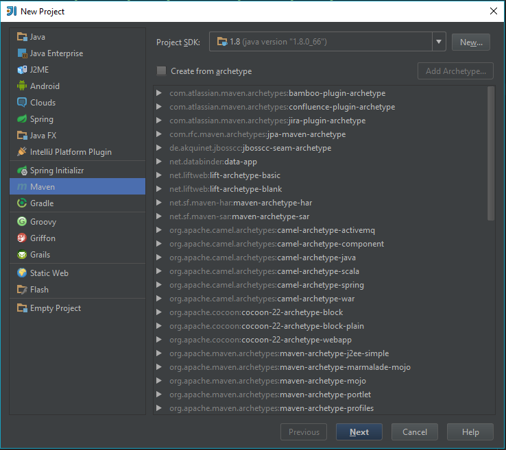
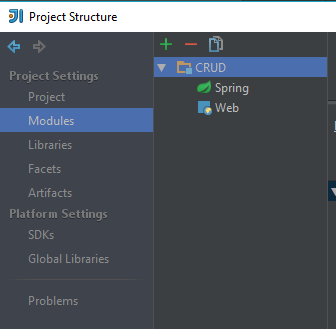
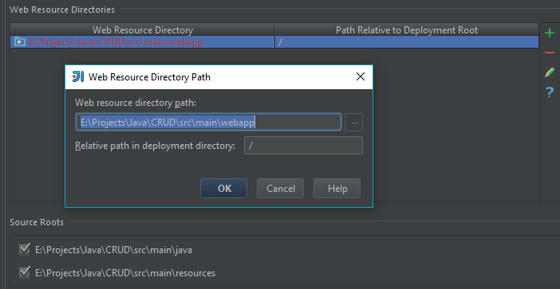
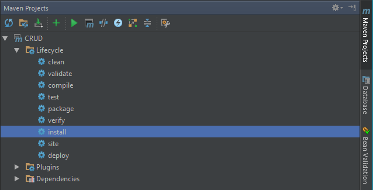
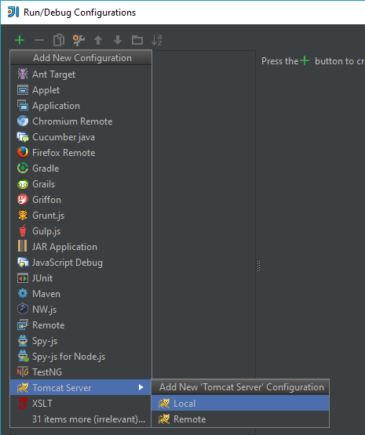
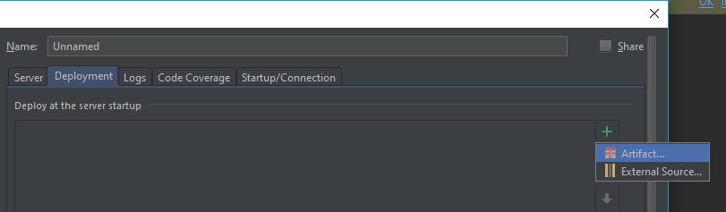
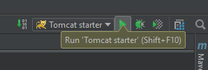

Создание проекта¶
Для начала нам понадобится установленная Java (JDK), а также среда разработки. Мы советуем использовать IntelliJ IDEA.
Запускаем IntelliJ IDEA и создаем новый проект. В окне выбора типа проекта указываем Maven.
{kind=link}
На следующей странице в поле GroupId вводим название фирмы (группы), а также артефакт проекта в поле ArtifactId.
Далее вводим название проекта и место расположения на диске. После этого откроется окно проекта. Структура проекта будет выглядеть примерно так:

Редактирование зависимостей в pom.xml¶
На следующем шаге нам необходимо отредактировать pom.xml файл, указав правильные зависимости.
Ниже указанный код поместим между тегами </version> и </project>:
1 2 3 4 5 6 7 8 9 10 11 12 13 14 15 16 17 18 19 20 21 22 23 24 25 26 27 28 29 30 31 32 33 34 35 36 37 38 39 40 41 42 43 44 45 46 47 48 49 50 51 52 53 54 55 56 57 58 59 60 61 62 63 64 65 66 67 68 69 70 71 72 73 74 75 76 77 78 79 80 81 82 83 84 85 86 87 88 89 90 91 92 93 94 95 96 97 98 99 100 101 102 103 104 105 106 107 108 109 110 111 112 113 114 115 116 117 118 119 120 121 122 123 124 125 126 127 128 129 130 131 132 133 134 135 136 137 138 139 140 141 142 143 144 145 146 147 148 149 150 151 152 | <properties>
<spring.version>4.2.1.RELEASE</spring.version>
<hibernate.version>4.2.5.Final</hibernate.version>
<mysql.connector.version>5.1.31</mysql.connector.version>
<jpa.version>1.0.0.Final</jpa.version>
</properties>
<packaging>war</packaging>
<dependencies>
<!--SPRING-->
<dependency>
<groupId>org.springframework</groupId>
<artifactId>spring-core</artifactId>
<version>${spring.version}</version>
</dependency>
<dependency>
<groupId>org.springframework</groupId>
<artifactId>spring-web</artifactId>
<version>${spring.version}</version>
</dependency>
<dependency>
<groupId>org.springframework</groupId>
<artifactId>spring-webmvc</artifactId>
<version>${spring.version}</version>
</dependency>
<dependency>
<groupId>org.springframework</groupId>
<artifactId>spring-jdbc</artifactId>
<version>4.2.1.RELEASE</version>
</dependency>
<dependency>
<groupId>org.springframework</groupId>
<artifactId>spring-orm</artifactId>
<version>${spring.version}</version>
</dependency>
<!-- Hibernate -->
<dependency>
<groupId>org.hibernate</groupId>
<artifactId>hibernate-core</artifactId>
<version>${hibernate.version}</version>
</dependency>
<dependency>
<groupId>org.hibernate</groupId>
<artifactId>hibernate-entitymanager</artifactId>
<version>${hibernate.version}</version>
</dependency>
<dependency>
<groupId>org.hibernate.javax.persistence</groupId>
<artifactId>hibernate-jpa-2.1-api</artifactId>
<version>${jpa.version}</version>
</dependency>
<!-- jsr303 validation -->
<dependency>
<groupId>javax.validation</groupId>
<artifactId>validation-api</artifactId>
<version>1.1.0.Final</version>
</dependency>
<dependency>
<groupId>org.hibernate</groupId>
<artifactId>hibernate-validator</artifactId>
<version>5.1.3.Final</version>
</dependency>
<!-- MySQL -->
<dependency>
<groupId>mysql</groupId>
<artifactId>mysql-connector-java</artifactId>
<version>${mysql.connector.version}</version>
</dependency>
<!-- Servlet+JSP+JSTL -->
<dependency>
<groupId>javax.servlet</groupId>
<artifactId>javax.servlet-api</artifactId>
<version>3.1.0</version>
</dependency>
<dependency>
<groupId>javax.servlet.jsp</groupId>
<artifactId>javax.servlet.jsp-api</artifactId>
<version>2.3.1</version>
</dependency>
<dependency>
<groupId>javax.servlet</groupId>
<artifactId>jstl</artifactId>
<version>1.2</version>
</dependency>
<!-- Pdf library -->
<dependency>
<groupId>com.itextpdf</groupId>
<artifactId>itextpdf</artifactId>
<version>5.0.6</version>
</dependency>
<!--Apache POI library-->
<dependency>
<groupId>org.apache.poi</groupId>
<artifactId>poi</artifactId>
<version>3.13</version>
</dependency>
<dependency>
<groupId>org.apache.poi</groupId>
<artifactId>poi-ooxml</artifactId>
<version>3.13</version>
</dependency>
<!--WebJars-->
<dependency>
<groupId>org.webjars</groupId>
<artifactId>bootstrap</artifactId>
<version>3.1.0</version>
<exclusions>
<exclusion>
<groupId>org.webjars</groupId>
<artifactId>jquery</artifactId>
</exclusion>
</exclusions>
</dependency>
<dependency>
<groupId>org.webjars</groupId>
<artifactId>jquery</artifactId>
<version>1.9.0</version>
</dependency>
</dependencies>
<build>
<pluginManagement>
<plugins>
<plugin>
<groupId>org.apache.maven.plugins</groupId>
<artifactId>maven-war-plugin</artifactId>
<version>2.4</version>
<configuration>
<warSourceDirectory>src/main/webapp</warSourceDirectory>
<warName>scrudop</warName>
<failOnMissingWebXml>false</failOnMissingWebXml>
</configuration>
</plugin>
</plugins>
</pluginManagement>
<finalName>SCRUDoperations</finalName>
</build>
|
Теперь добавим поддержку Spring: . В Появившемся окне выбираем . Должна быть выбрана метка Use library, жмем ОК.
Настройка конфигурации проекта¶
Теперь в папке Java создадим пакет com.scrud.configs. В нём создадим новый класс WebConfig и заполним его следующим кодом:
1 2 3 4 5 6 7 8 9 10 11 12 13 14 15 16 17 18 19 20 21 22 23 24 25 26 27 28 29 30 31 32 33 34 35 | package com.scrud.config;
import org.springframework.context.annotation.Bean;
import org.springframework.context.annotation.ComponentScan;
import org.springframework.context.annotation.Configuration;
import org.springframework.web.servlet.ViewResolver;
import org.springframework.web.servlet.config.annotation.EnableWebMvc;
import org.springframework.web.servlet.config.annotation.ResourceHandlerRegistry;
import org.springframework.web.servlet.config.annotation.WebMvcConfigurerAdapter;
import org.springframework.web.servlet.view.InternalResourceViewResolver;
import org.springframework.web.servlet.view.ResourceBundleViewResolver;
@Configuration
@ComponentScan({"com.scrud"})
@EnableWebMvc
public class WebConfig extends WebMvcConfigurerAdapter {
@Bean
public ViewResolver getViewResolver(){
InternalResourceViewResolver resolver = new InternalResourceViewResolver();
resolver.setPrefix("/pages/");
resolver.setSuffix(".jsp");
resolver.setOrder(2);
return resolver;
}
@Override
public void addResourceHandlers(ResourceHandlerRegistry registry) {
registry.addResourceHandler("/resources/**").addResourceLocations("/resources/");
if (!registry.hasMappingForPattern("/webjars/**")) {
registry.addResourceHandler("/webjars/**").addResourceLocations("classpath:/META-INF/resources/webjars/");
}
}
}
|
В том же пакете добавим ещё один класс AppInit с таким содержанием:
1 2 3 4 5 6 7 8 9 10 11 12 13 14 15 16 17 18 19 20 21 22 23 24 25 26 27 28 29 | package com.scrud.config;
import org.springframework.web.servlet.support.AbstractAnnotationConfigDispatcherServletInitializer;
public class AppInit extends AbstractAnnotationConfigDispatcherServletInitializer {
// Этот метод должен содержать конфигурации которые инициализируют Beans
// для инициализации бинов у нас использовалась аннотация @Bean
@Override
protected Class<?>[] getRootConfigClasses() {
return new Class<?>[]{
WebConfig.class
};
}
// Тут добавляем конфигурацию, в которой инициализируем ViewResolver
@Override
protected Class<?>[] getServletConfigClasses() {
return new Class<?>[]{
WebConfig.class
};
}
@Override
protected String[] getServletMappings() {
return new String[]{"/"};
}
}
|
Теперь нам нужно применить новые конфигурации к проекту. Для этого идем в пункт меню , выбираем в списке и раскрываем содержание модуля CRUD
{kind=link}
Далее выделяем Spring и нажимаем справа зеленый плюс (добавить). В окне New Application Context
ставим галочку напротив созданного нами класса WebConfig.java, жмем ОК.
{kind=link}
После чего выделяем Web. В нижнем разделе Web Resource Directories делаем двойной клик по строке, заканчивающейся на webapp и в открывшемся окне нажимаем ОК, соглашаясь с созданием новой директории.
{kind=link}
Теперь просто нажимаем Apply и OK. Мы сконфигурировали наш сервер. Осталось добавить контроллер, который будет выдавать ответ на запрос и сам ответ, то есть страницу, которую увидет пользователь.
Создание контроллера¶
Создадим новый пакет com.scrud.controllers в котором создадим класс HelloController:
1 2 3 4 5 6 7 8 9 10 11 12 13 14 15 16 17 18 19 20 21 22 23 24 25 | package com.scrud.controllers;
import org.springframework.stereotype.Controller;
import org.springframework.ui.ModelMap;
import org.springframework.web.bind.annotation.RequestMapping;
import org.springframework.web.bind.annotation.RequestMethod;
@Controller
public class HelloController {
@RequestMapping(value = "/", method = RequestMethod.GET)
public String printWelcome(ModelMap model) {
return "index";
}
@RequestMapping(value = "/about", method = RequestMethod.GET)
public String printJpa(ModelMap model) {
return "about";
}
}
|
Добавление страницы¶
В директории webapp создадим новую дерикторию pages. В pages создадим дерикторию page_components.
Теперь в page_components создадим новый JSP файл header.jsp и заполним его таким кодом:
1 2 3 4 5 6 7 8 9 10 11 12 13 14 15 16 17 18 19 20 21 22 23 24 25 26 27 28 29 30 31 32 33 34 | <%@ page contentType="text/html;charset=UTF-8" language="java" %>
<header>
<nav class="navbar navbar-inverse navbar-fixed-top">
<div class="container">
<div class="navbar-header">
<button type="button" class="navbar-toggle collapsed" data-toggle="collapse" data-target="#navbar" aria-expanded="false" aria-controls="navbar">
<span class="sr-only">Toggle navigation</span>
<span class="icon-bar"></span>
<span class="icon-bar"></span>
<span class="icon-bar"></span>
</button>
<a class="navbar-brand" href="/">SCRUDproject</a>
</div>
<div id="navbar" class="collapse navbar-collapse">
<ul class="nav navbar-nav">
<li class="dropdown">
<a href="#" class="dropdown-toggle" data-toggle="dropdown" role="button"
aria-haspopup="true" aria-expanded="false">Operations <span class="caret"></span>
</a>
<ul class="dropdown-menu">
<li><a href="/jdbc">JDBC</a></li>
<li role="separator" class="divider"></li>
<li><a href="/hibernate">Hibernate</a></li>
<li role="separator" class="divider"></li>
<li><a href="/jpa">JPA</a></li>
</ul>
</li>
<li><a href="/about">About</a></li>
<li><a href="/contact">Contact</a></li>
</ul>
</div><!--/.nav-collapse -->
</div>
</nav>
</header>
|
Это шапка, которая будет показываться на всех страницах сайта. Давайте добавим главную страницу.
В директории pages создадим файл index.jsp с содержанием:
<%@ taglib prefix="c" uri="http://java.sun.com/jsp/jstl/core" %>
<%@ page contentType="text/html;charset=UTF-8" language="java" %>
<html>
<head>
<link href="<c:url value="${pageContext.request.contextPath}/webjars/bootstrap/3.1.0/css/bootstrap.min.css" />" rel="stylesheet">
<link href="/resources/css/basic.css" rel="stylesheet">
<script src="<c:url value="${pageContext.request.contextPath}/webjars/jquery/1.9.0/jquery.min.js" />"></script>
<script src="<c:url value="${pageContext.request.contextPath}/webjars/bootstrap/3.1.0/js/bootstrap.js" />"></script>
<title>CRUD operations</title>
</head>
<body>
<c:import url="page_components/header.jsp"></c:import>
<div class="container" >
<div class="row">
<div class="col-lg-8 col-lg-offset-2">
<div class="jumbotron" id="index_jumbotron">
<div class="text-center"><h1>CRUD operations</h1></div>
<p class="lead text-center text-nowrap">CRUD is the 4 basic operations of data management: create, read, update, delete</p>
</div>
<div class="cols">
<div class="row">
<div class="col-lg-4">
<img class="img-rounded" src="/resources/img/jdbc.png" alt="jdbc logo" width="140" height="140">
<p>Java Database Connectivity (JDBC) is an application programming interface (API) for the programming language Java, that defines how a client may access a database.</p>
<p><a class="btn btn-primary" href="/jdbc" role="button">View JDBC »</a></p>
</div>
<div class="col-lg-4">
<img class="img-rounded" src="/resources/img/hiber.png" alt="hibernate logo" width="140" height="140">
<p>Hibernate ORM is framework for the Java language. It provides a framework for mapping an object-oriented domain model to a relational database.</p>
<p><a class="btn btn-primary" href="/hibernate" role="button">View Hibernate»</a></p>
</div>
<div class="col-lg-4">
<img class="img-rounded" src="/resources/img/jpa.png" alt="hibernate logo" width="140" height="140">
<p>The Java Persistence API (JPA) is a Java API specification that describes the management of relational data in applications using Java SE and Java EE.</p>
<p><a class="btn btn-primary" href="/jpa" role="button">View JPA »</a></p>
</div>
</div>
</div>
</div>
</div>
</div>
</body>
</html>
Сборка проекта¶
Теперь соберем наш проект. Для этого откроем окно Maven Projects возле правой границы IDE. В функциях Lifecycle выполним скрипты clean, затем install.
{kind=link}
Теперь мы получили war файл,который мы будем деплоить на сервер.
Деплой на Tomcat¶
Скачиваем сервер приложений Tomcat 8+ отсюда. Устанавливаем его с конфигурациями по умолчанию.
Теперь в IDE нажимаем в правом верхнем углу стрелку вниз и выбираем Edit configurations. В появившемся окне нажимаем зеленый плюс и выбираем .
{kind=link}
После чего во вкладке Deployment нажимаем .
{kind=link}
Выбираем :war , нажимаем ОК. Даем имя нашей конфигурации и подтверждаем её создание. Теперь запускаем созданную конфигурацию сервера.
{kind=link}
Чтобы открыть созданный сайт, в строке браузера пропишем адрес: localhost:8080.
Как вы можете заметить, в странице отсутствуют стили разметки и изображения, их мы добавим в следующих шагах.